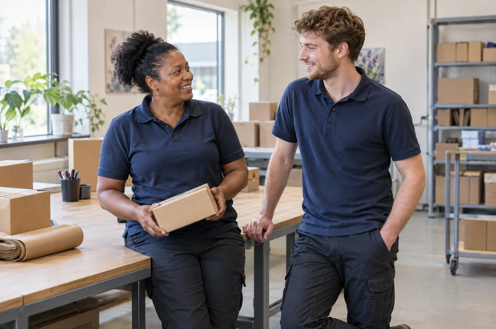

De arbeidshygiënist
Deze deskundige kijkt naar omgevingsfactoren die de gezondheid op het werk kunnen beïnvloeden. Denk aan stoffen, geluid, trillingen of herhalende belasting. Het advies helpt om blootstelling en belasting beter te beheersen.
RI&E & risicomanagement
Een veilige en gezonde werkomgeving begint bij weten wat er speelt. Met een risico-inventarisatie en -evaluatie (RI&E) helpt React2u risico’s in kaart te brengen en te vertalen naar een plan van aanpak.

Samen aan de slag
Sommige risico’s zijn direct zichtbaar, zoals werken met machines. Andere zijn minder tastbaar, zoals hoge werkdruk of ongewenst gedrag. Onze deskundigen kijken naar de omstandigheden binnen je organisatie en welke verbeteringen de veiligheid en gezondheid kunnen ondersteunen.
De bedrijfsarts is specialist in arbeid en gezondheid en adviseert over gezond blijven en herstel. Daarbij is aandacht voor de medewerker, de uitvoering van het werk en het beleid van de organisatie.
Deze deskundige kijkt naar omgevingsfactoren die de gezondheid op het werk kunnen beïnvloeden. Denk aan stoffen, geluid, trillingen of herhalende belasting. Het advies helpt om blootstelling en belasting beter te beheersen.
Deze specialist richt zich op risicobeoordeling en veiligheid op de werkplek. De adviezen ondersteunen een veilige werkomgeving en het verbeteren van de arbeidsomstandigheden binnen je organisatie.
Deze deskundige kijkt naar de manier waarop werk is georganiseerd en de invloed daarvan op mensen. Onderwerpen zijn onder meer werkdruk, stress, ongewenst gedrag en het functioneren van medewerkers en teams.
Helder voor iedereen